Домна
Загляните в гости к Домне,
расскажите ей о доме,
где её так давно ждут,
где она создаст уют.
Позовите, обнимите
и домой скорей зовите.
Эти кошки ждут любящую семью. Может, именно вы — их человек?
Сейчас в приюте: …
Загляните в гости к Домне,
расскажите ей о доме,
где её так давно ждут,
где она создаст уют.
Позовите, обнимите
и домой скорей зовите.

Девчонка такая стройная, изящная, лёгкая, как пёрышко. Воздушная балеринка в белых пуантах))) Характер покладистый, нрав неконфликтный. С сородичами живёт дружно.
Узнать о Дантесе
Молоденькая девчушка очень хочет вам понравиться. Её братик и сестрички уже обрели дом. А она уже почти год ждёт своего человека в приюте.
Узнать о Всеславе
Если у вас до сих пор нет дома кошки, то милости просим к нам в приют! Мы вас познакомим с такой приятнейшей особой, каких вам ещё не довелось повидать.
Узнать о Дарамире
Дамочка не агрессивная, а просто очень пугливая. Ей бы и хотелось получить ласку от человека, но сделать шаг вперёд Анютке пока очень страшно.
Узнать об Анютке
Ищем самые тёплые руки для замечательной девочки. Чебурашка была спасена с улиц города. Она со всех сторон положительная: умная, красивая, спокойная, ненавязчивая, ласковая.
Узнать о Чебурашке
В поисках тёплого уголка и любящих рук! Эта юная леди — воплощение спокойствия. Исида — настоящая красавица с шубкой окраса нежных пастельных тонов.
Узнать об Исиде
Девочка очень скромная и немного пугливая, но оно и понятно — ведь не каждый может сразу занять своё место в таком большом коллективе. Но она, как и все, ждёт того единственного, кто растопит её сердечко.
Узнать о Глории
Очень скромная девочка, ведёт себя тихо, как мышка. Старается не привлекать к себе внимание, немного побаивается. Но всё это временно — дома точно раскроется её широкая душа.
Узнать о Марсианке
Плюшевая девочка с намёком на породу — это просто невероятное очарование. Какое тепло и счастье исходит от неё, не передать словами! Была бы её воля, она часами бы сидела на руках у человека.
Узнать о Сиэль
Светлое облачко нашего приюта. Она вся такая мягкая, белая, пушистая. Времена, когда она всего и всех боялась, прошли — теперь это уже совсем обычная кошка, с радостью даёт себя погладить.
Узнать о Белочке
А рыжие, они такие разные! В настроении хорошем — прекрасные, в игривом — сущий огонь. Это всё о нём, о рыжем метеоре Мэни: шустрик и баламут, который носится почище мастера Формулы-1.
Узнать о Мэни
Любоваться Арикой можно просто бесконечно — она так изящна и красива. Несмотря на распространённый камышовый окрас, в ней есть свой шарм и своё обаяние. Арика не из тех, кто сразу полезет к вам на руки, но от ласки не отказывается — просто ей немного страшно.
Узнать об Арике
Несмотря на то, что Нейтон у нас особенный котик, он очень обаятельный товарищ. Один его глазик, к сожалению, пришлось удалить, но это нисколько не портит внешность этого прекрасного бархатного котишки благородного чёрного оттенка. Кажется, он совсем не замечает своей особинки — просто обычный кот, такой же, как все.
Узнать о Нейтоне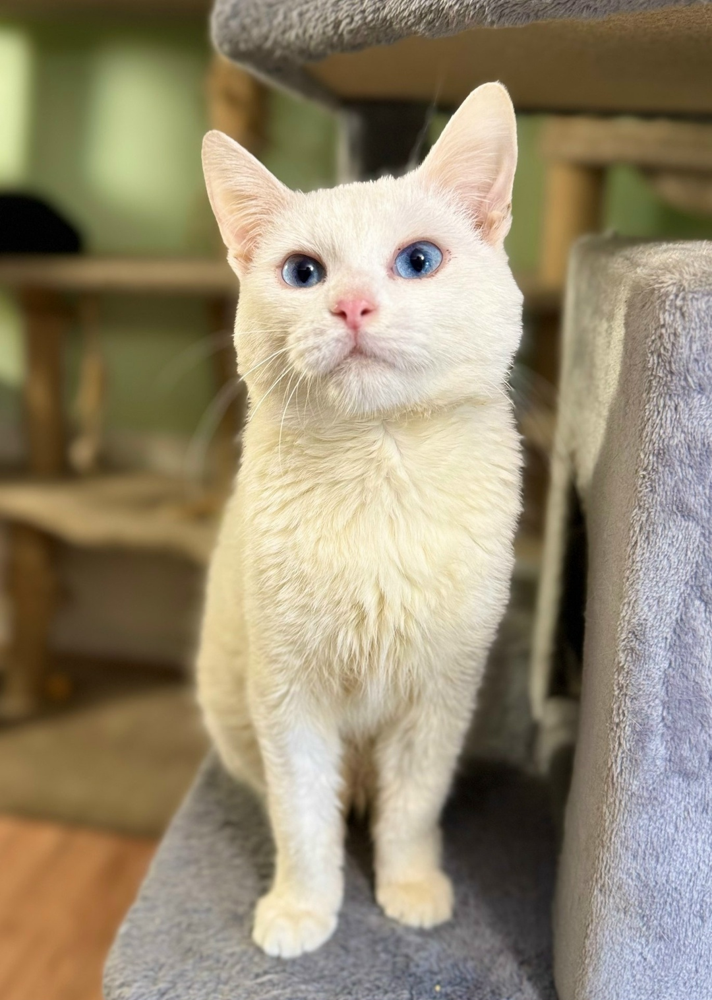
Если вы ищете доброго друга, то вот же он! Гермесу достался не только золотой характер, но и очень красивая внешность, а какие у него глубокие глаза и мудрый взгляд. Ко всему этому мальчик очень ласковый — в общем «колхозе» со всеми дружит. Просто золотой ребёнок.
Узнать о Гермесе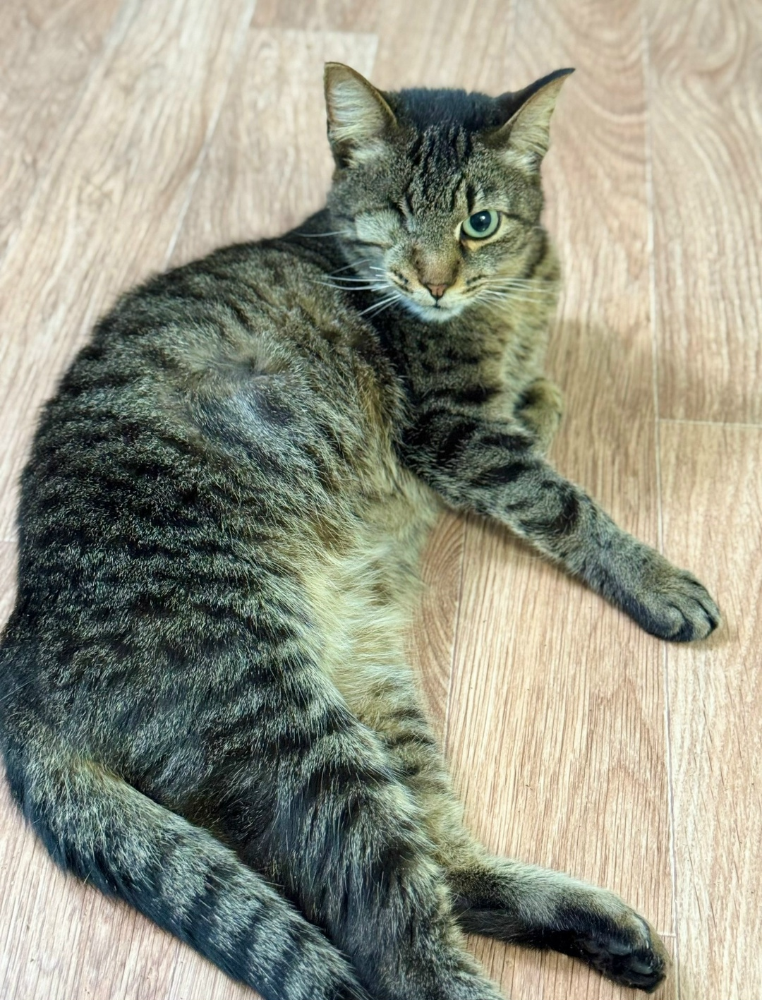
Он сидит на окне и смотрит вдаль — вдумчиво, осмысленно. Что видит там обычный серый кот: вспоминает безрадостное прошлое или пытается разглядеть счастливое будущее? Но есть настоящее, а в нём — кот-борец, кот-характер, кот-красавчик.
Узнать о Гюсе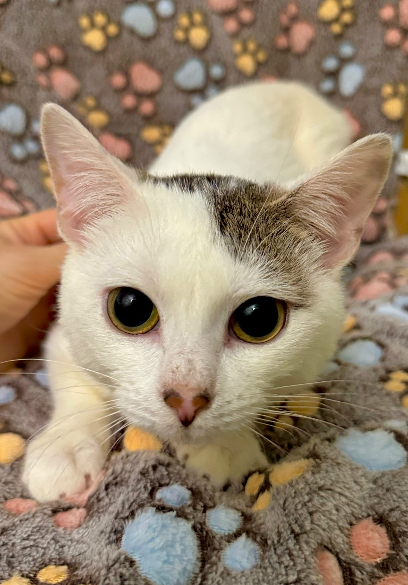
Велик — это создание тонкой душевной организации: не матёрый кот, а нежный росточек. Настоящий «велик» — стройный и длинноногий, но очень красивый! Совсем молоденький и хорошенький, а отличает его скромность.
Узнать о Велике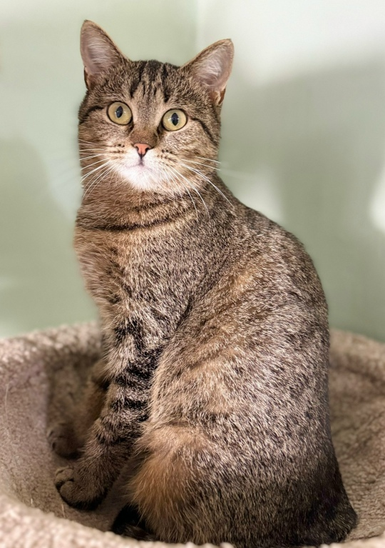
Вроде бы эта девочка и обычная полосатая кошечка, а вот и нет — есть в ней своя изюминка и свой шарм. Полосочки её очень красят, а какой у неё проникновенный взгляд — всё понимающий, мудрый и очень нежный. Поначалу эта кошечка была настороженной, но уже совсем оттаяла.
Узнать о Ребекке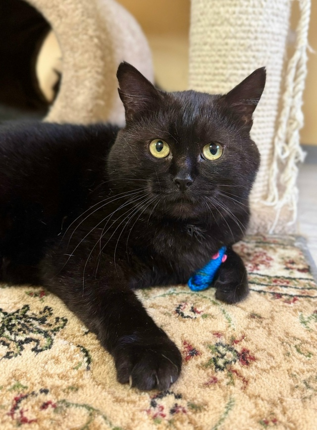
С виду мамин пирожочек и плюшевый зайка, а в душе — и Терминатор, и Рэмбо, и даже немножко царь. Килограммов пять роскошного мягкого очарования, готового принимать и любить себя таким, какой есть, и очаровывать окружающих.
Узнать о Краше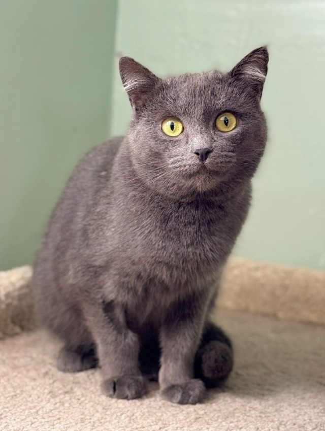
Говорят, что конёк серых кошек — интуиция и способность к сопереживанию. Они защита от сплетен и скандалов, залог удачи и достатка, а ещё прекрасное бесплатное успокоительное. Так почему же такое чудо, как Бекки, ещё не у вас, не на вашем диване?
Узнать о Бекки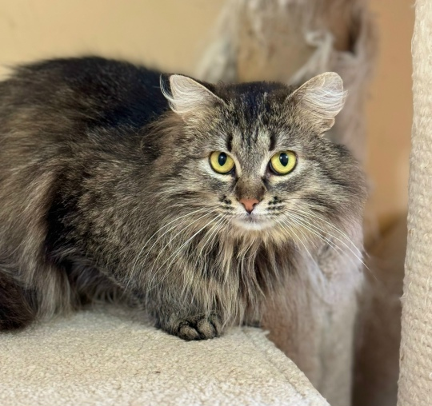
Пушистый, с шикарным хвостом. Красивущий полосатик-сибиряк, мягонький, контактный, комнатно-пригодный — в смысле очень приличных манер парень. Вполне себе адекватный, но с характером — пацаны же должны немного бунтовать для солидности!
Узнать о Рамене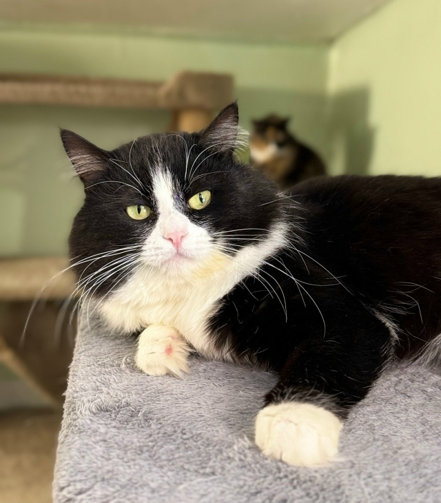
Всё просто: парень-то до чего же справен, человеколюбив, ласков, чистоплотен и просто хорош собой! Габариты внушительные, вес подобающий, а красота прям очи затмевает — крупный шикарный котище! Вот обнять такого — и наполниться счастьем, умиротворением и переполниться всякими душевными чувствами.
Узнать о Василе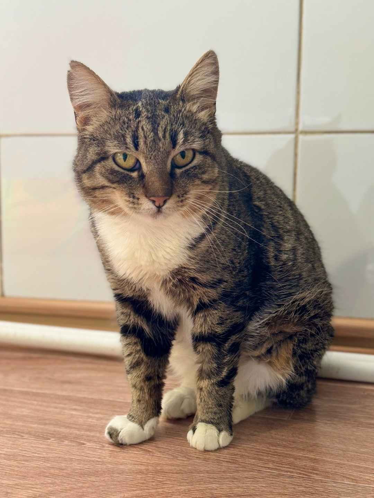
Возможно, вы тот самый человек, готовый подарить этой девчушке целый мир и показать ей, как здорово, когда тебя любят и о тебе заботятся. С момента появления Валери в приюте прогресс определённо есть.
Узнать о Валери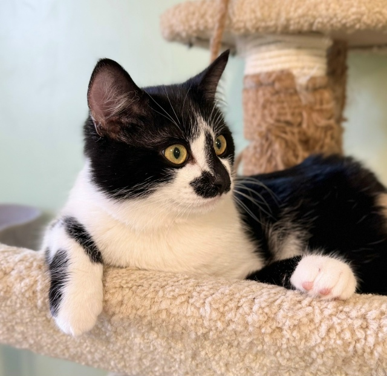
Вот он, малышок Ерошка, — море очарования, обаяния и позитива! Ещё тот суетолог: везде нос сунет, всё прошарит, пролезет даже туда, где «посторонним вход запрещён». А красавец какой — вырастет в роскошного барина-кота!
Узнать о Ерошке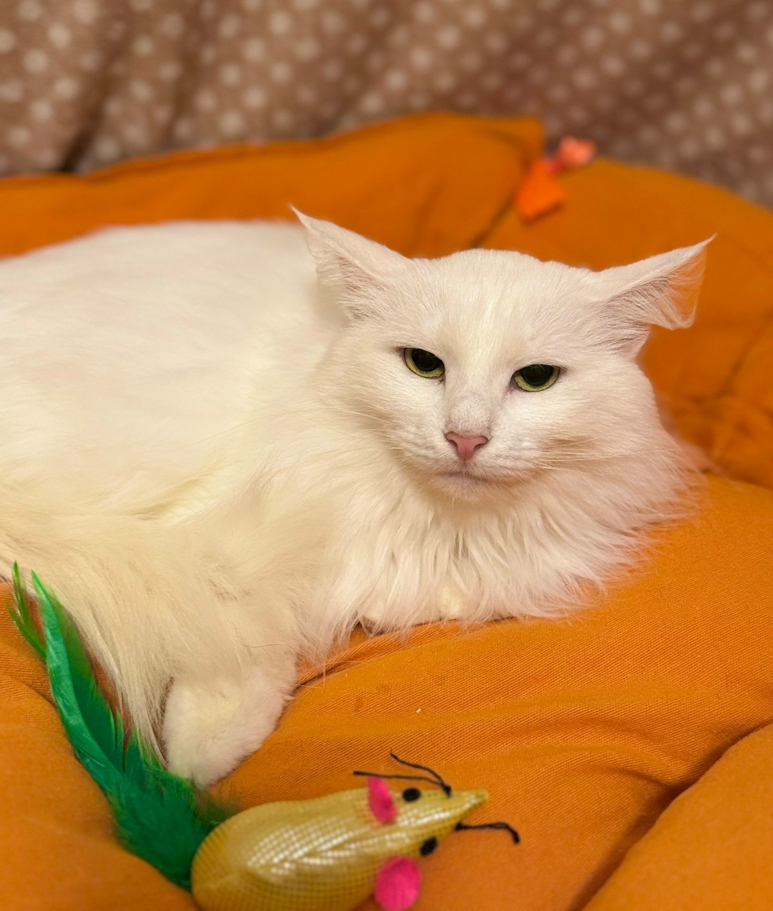
«Мы, блондинки, в моде при любой погоде» — решила однажды мадмуазель Фуджи и, распушив хвост, стала няшечкой: покладистой, но пока осторожной, очаровательным облачком с характером. Не сразу, но лёд в отношениях тает — теперь и погладить роскошную белую шубку позволяет, и на ручках учится сидеть.
Узнать о Фуджи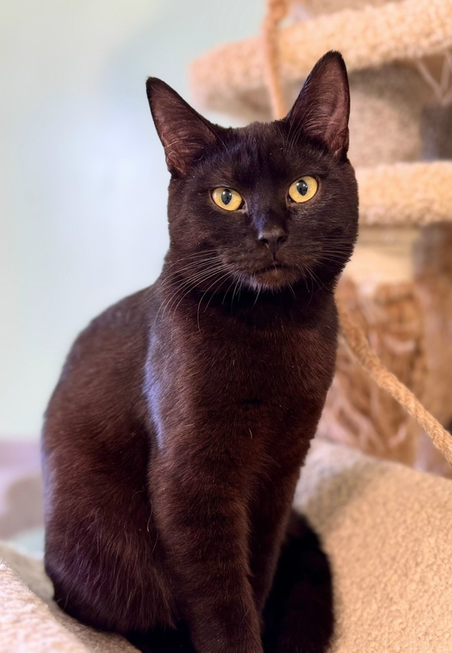
Сколько обаяния и благородства в этом наишикарнейшем коте! Заходя в кошачий «колхоз», взгляд невольно останавливается на этом крупном представителе семейства кошачьих. Он восхищает своими размерами, идеальной лоснящейся чёрно-шоколадной шёрсткой и фигурой. Нуар молод, упитан, красив и немного сдержан.
Узнать о Нуаре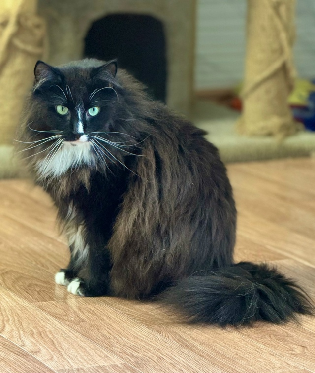
Парень пока очень пугливый, шипит, пытается страху и шороху на всех навести. Но это всё из разряда «я самый страшный зверь, бойтесь меня! Я, правда, и сам всего боюсь, но в обиду себя не дам». Приходится с парнем вести задушевные беседы на расстоянии.
Узнать о Юпитере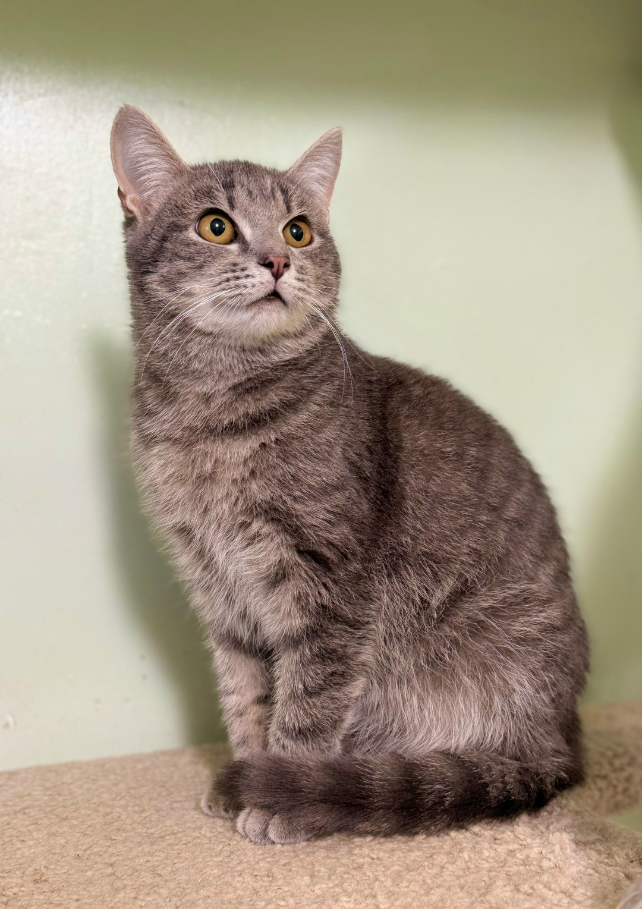
Это молоденький парень, сынок нашей Ундины. Серое чудо с маленьким рыжим пятнышком на плечике, которое досталось ему от мамы. Он просто подарок судьбы для того, кому очень не хватает друга: общительный, весёлый в меру, оптимист по натуре. Любит побегать и поиграть, ему всё интересно.
Узнать о Пятнышке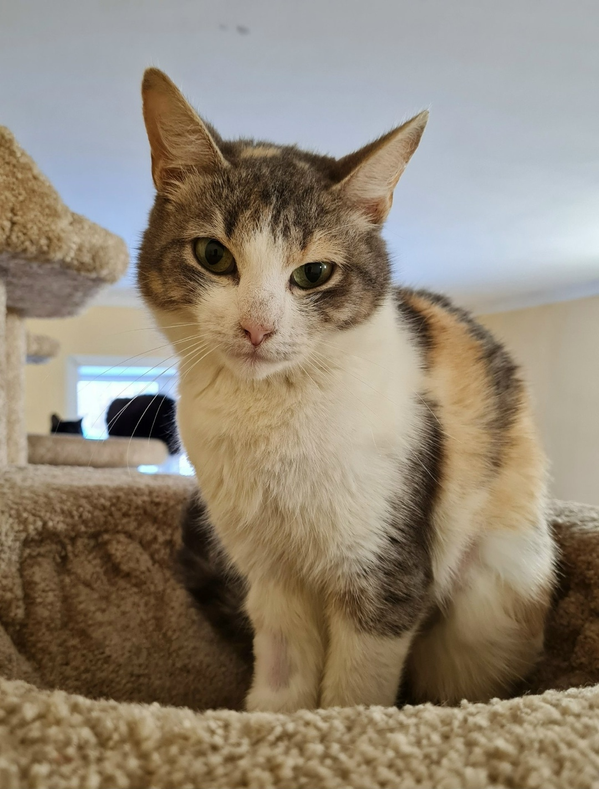
Кошечка Авария получила своё имя, когда оказалась у нас после того, как стала жертвой автомобильных лихачей, которые оставили её на дороге умирать. Но малявка всем назло и нам на радость поправилась, вылечилась и стала настоящей девочкой-дюймовочкой с зелёными глазами и любопытным розовым носиком.
Узнать об Аварии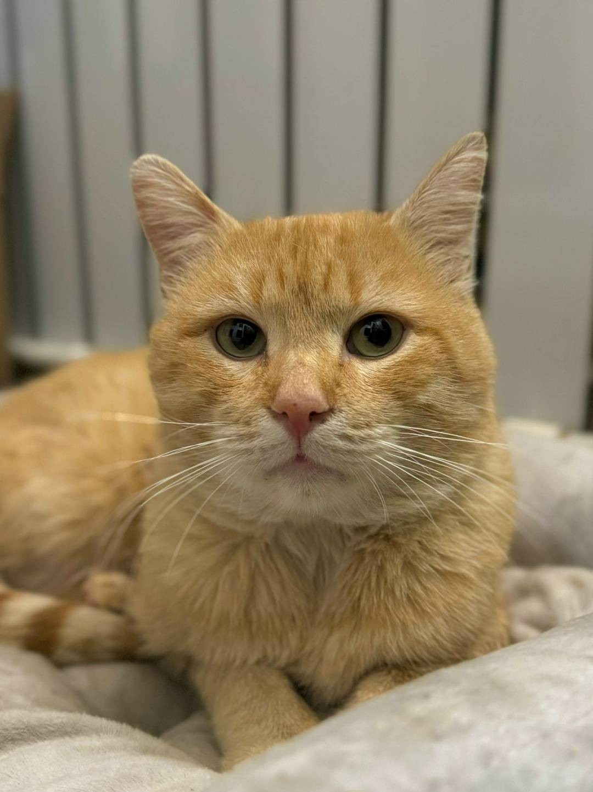
Мягкий плюшевый добряк с золотым характером. Упитан, как все рыжие увальни, воспитан, зеленоглаз, чертовски обаятелен и привлекателен! Обладает завидным аппетитом, чистоплотен, абсолютно ручной. Кому же такое рыжее счастье, солнечное и неимоверно ласковое, достанется?
Узнать о Фреде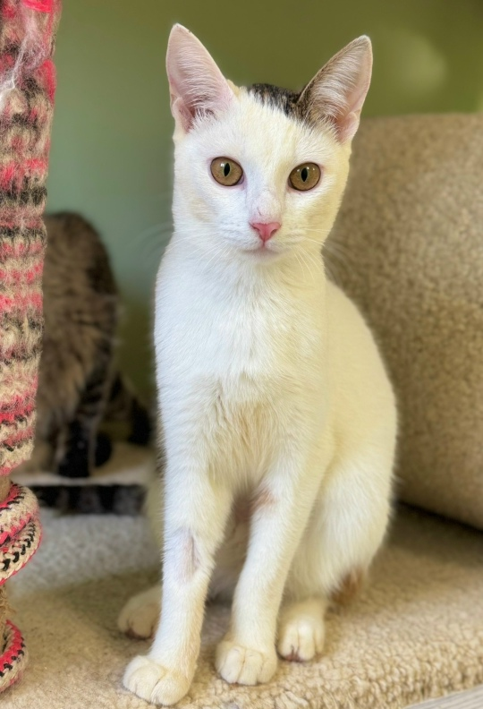
Джени — это супер-реакция, супер-внимательность, супер-скорость, супер-ловкость. Она молоденькая девица, у которой энергии через край: любопытна, умна и очень активна в силу возраста. Даже наш Шумахер, по сравнению с Джени, не такой быстрый!
Узнать о Джени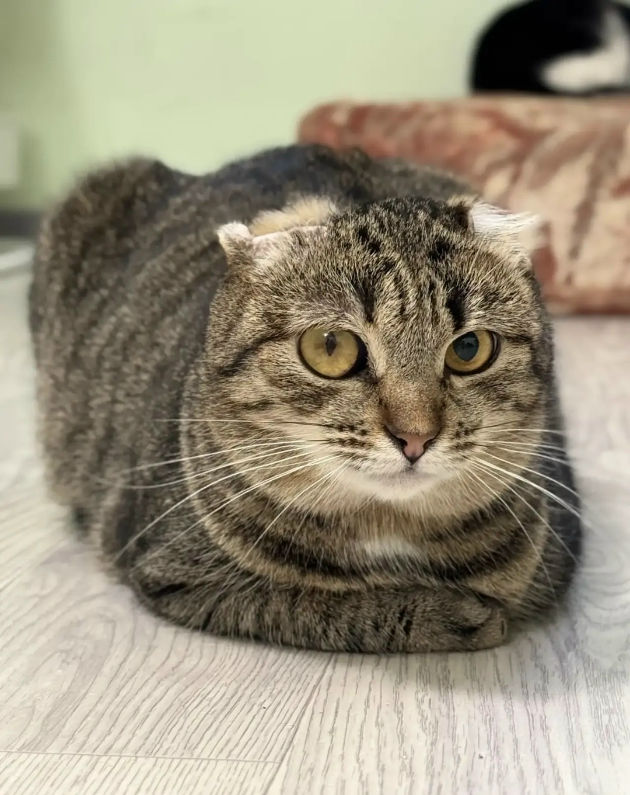
Ангелика — девочка очень осторожная и очень пугливая. Можно только смотреть на неё и разговаривать, а вот погладить — не вариант: не подпускает, не доверяет. Мы понимаем, что Ангелика вряд ли покинет стены приюта, но не рассказать о ней — значит лишить её последней, даже самой призрачной, надежды стать домашней.
Узнать об Ангелике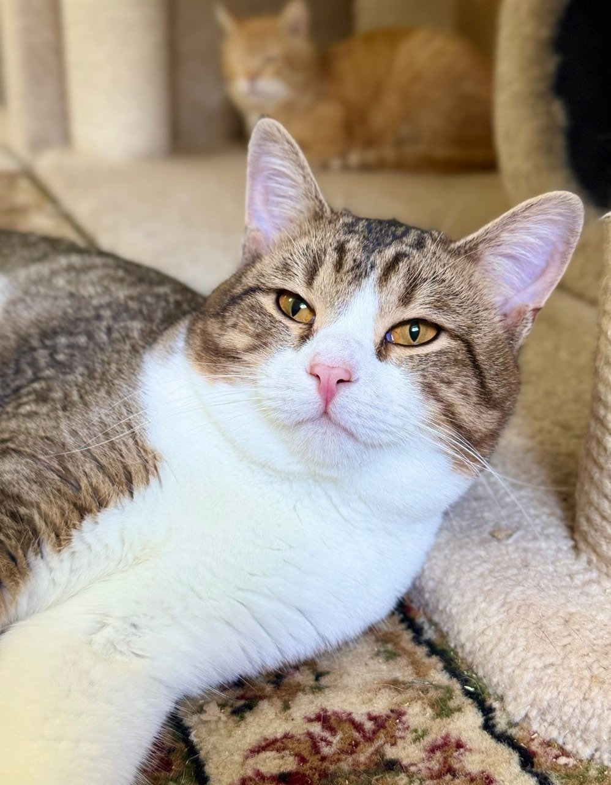
Этот шикарный мужчина внушительных размеров обладает невероятной харизмой и обаянием, какое свойственно только самым очаровательным котам. Чего только стоит один его взгляд горчично-янтарных глаз! Даже по фото видно, что он знает себе цену — гордо вышагивает по приюту, показывая, что он хозяин жизни.
Узнать о Лаоре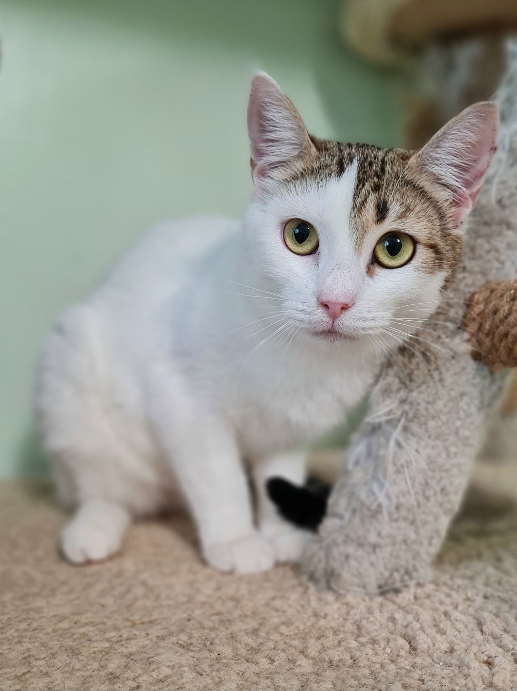
Малышка приехала к нам зимой, запуганная, дикая, всего и всех боящаяся. Она училась выживать в холод, согреваться, как это только возможно, и если бы не добрые люди, Цацы скорее всего уже и не было бы на этом свете. Но всё самое плохое осталось позади — теперь она у нас, постепенно освоилась, нашла друзей.
Узнать о Цаце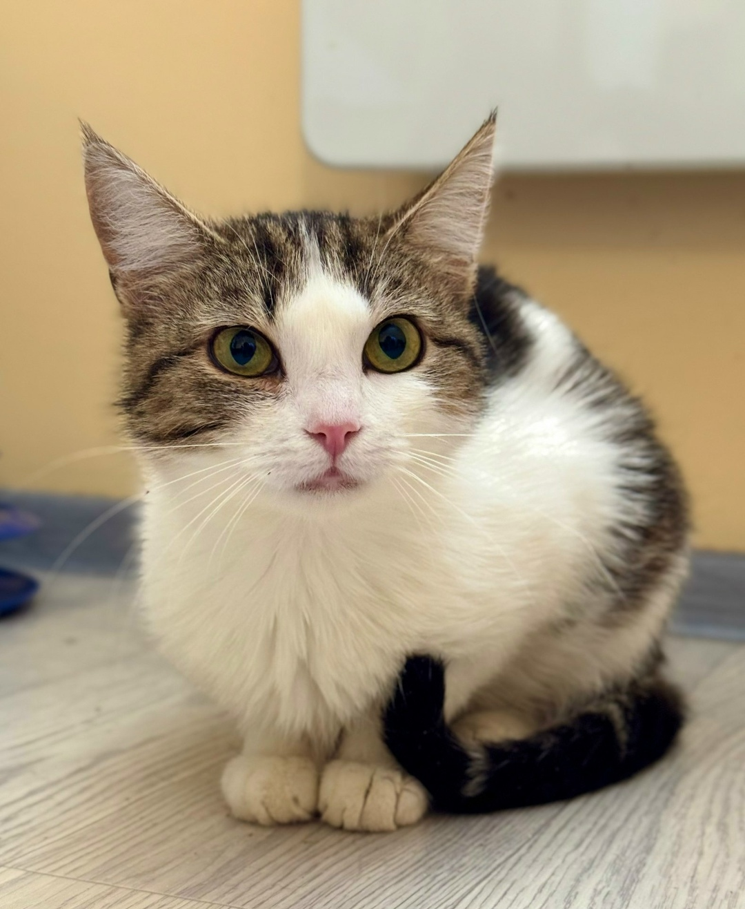
Она у нас красавица. А вот с коммуникацией пока всё сложно — тихая, скромная одиночка. Но это пока. Будем надеяться, что пребывание в общем «колхозе» пойдёт ей на пользу, и тогда Лаиса даст нам себя погладить и будет с нами дружить. Сейчас просто наблюдает. Но и это прекрасно.
Узнать о Лаисе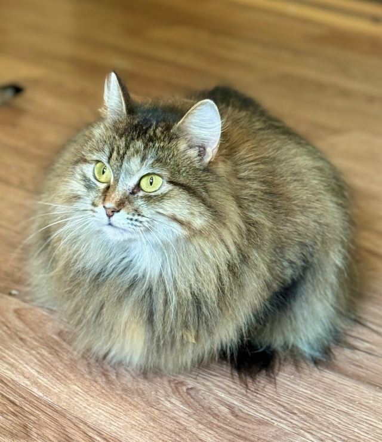
Бастинда немного пугливая, но это поначалу. Как только до неё дотрагиваешься, она сразу же расслабляется и с большим удовольствием принимает ласку. Что с ней было до приюта — одному Богу известно, но у нас она буквально оттаяла.
Узнать о Бастинде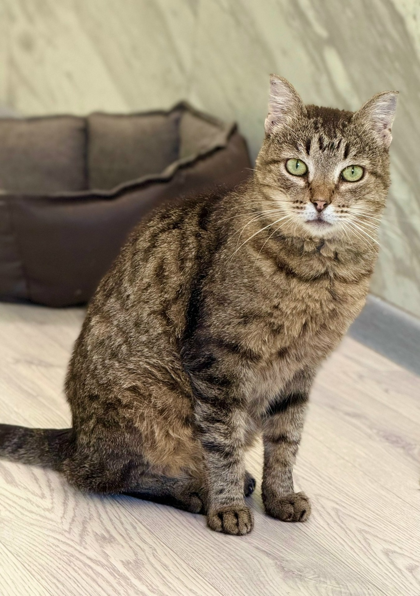
Ласковый и тактильный, Сван не навязывает своё присутствие, но радость от общения выражает громким мурчанием и желанием почесух за ухом. Лоялен к сородичам-котам, снисходительно-тактичен с дамами «колхоза». Такой самодостаточный парень, а вот к людям — со всей душой!
Узнать о Сване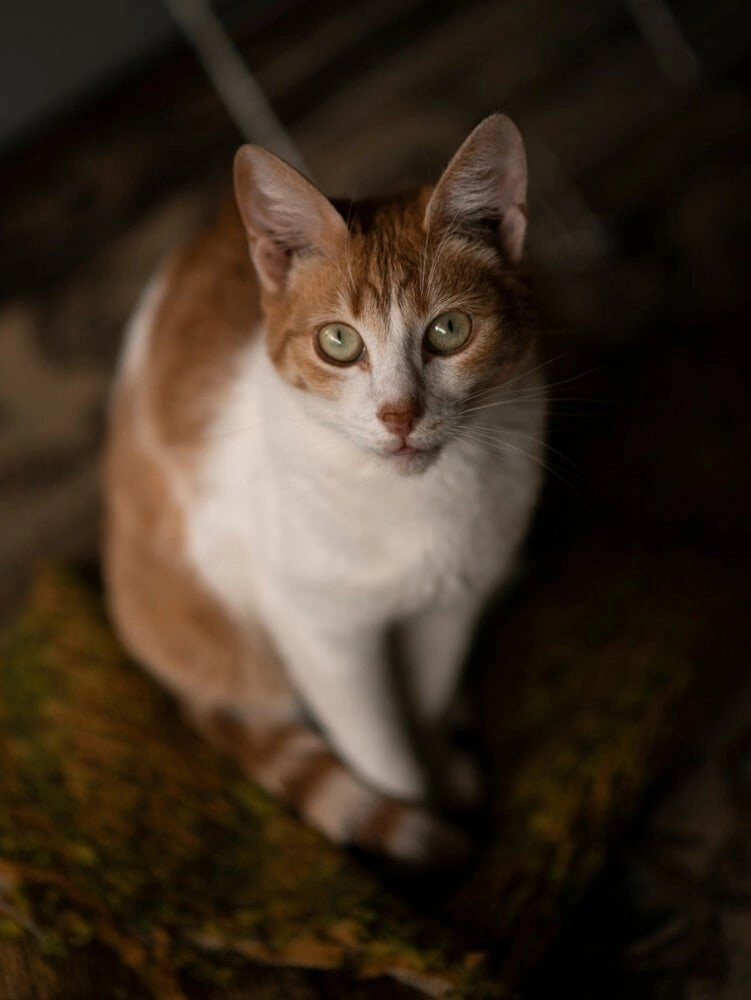
Красивая — есть у кого-то возражения? Активная — ещё какая! Вместе со всеми в «колхозе» скачет, будь здоров, потому стройная и изящная, как статуэточка. Ласковая, игривая — будет тешить вас игрой с шариками, фантиками, вашими пятками по утрам! Уникальна, единственный экземпляр. Аккуратная.
Узнать о Калине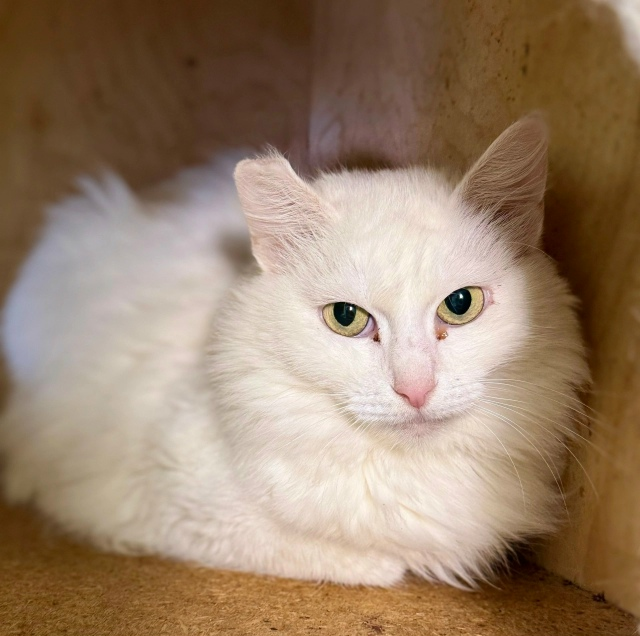
Мы понимаем, что вряд ли Мама Чоли уедет домой, по крайней мере в ближайшее время: не всем кошкам суждено найти своих людей, ведь в большинстве своём люди ищут ласковых, нежных и уютных друзей. Мама Чоли другая — красивая и неприступная. Такие представители, как она, живут в приюте в сытости, тепле, на мягких уютных лежаночках, в домиках.
Узнать о Маме Чоли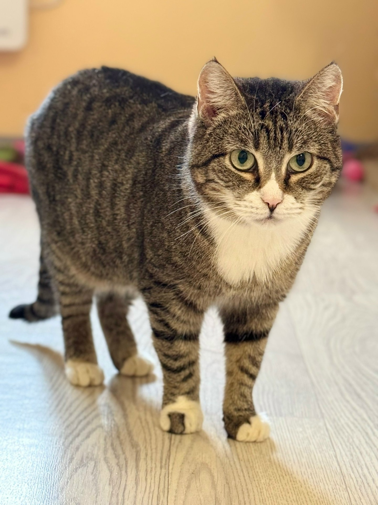
Обычная полосатая шпротинка в белых носочках никогда не бежит встречать гостей, не ластится под рукой, не привлекает внимания к своей персоне громким мурлыканьем. Нет, она не трусишка — она очень скромная и ненавязчивая девочка. Нечасто ей достаётся внимание и возможность ощутить тепло человеческих объятий, и в такие редкие минуты понимаешь, насколько у неё трепетная душа.
Узнать о Базуке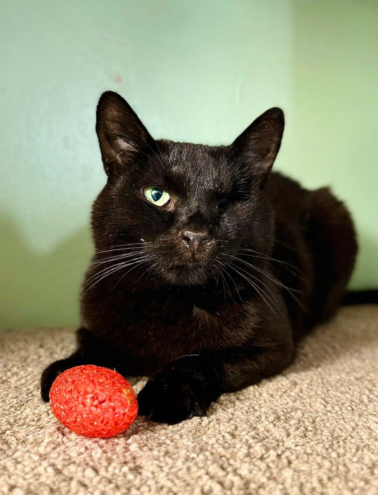
Плейбой приехал в приют больным, худым, облезлым, жалким — одним словом, обнять и плакать. Один глазик пришлось сразу удалить. Но парень оказался не промах и со временем сменил статус с «жалкость» на «его роскошество». Сейчас котэ уже окреп, возмужал, отъел бочка, шубка заблестела.
Узнать о Плейбое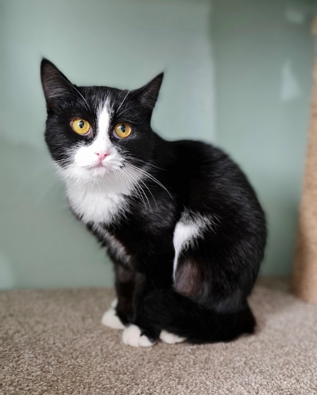
Ну вот как не восхищаться этим минимализмом! Ведь ничего лишнего в окрасе, всё органично и эстетично — одни белые носочки чего стоят! Шубка гладкая, блестящая. Возможно, не очень-то пока разрешает себя погладить, стесняется, а может, присматривается и ждёт следующей главы счастливой истории — встречи со своим человеком.
Узнать о Сильвии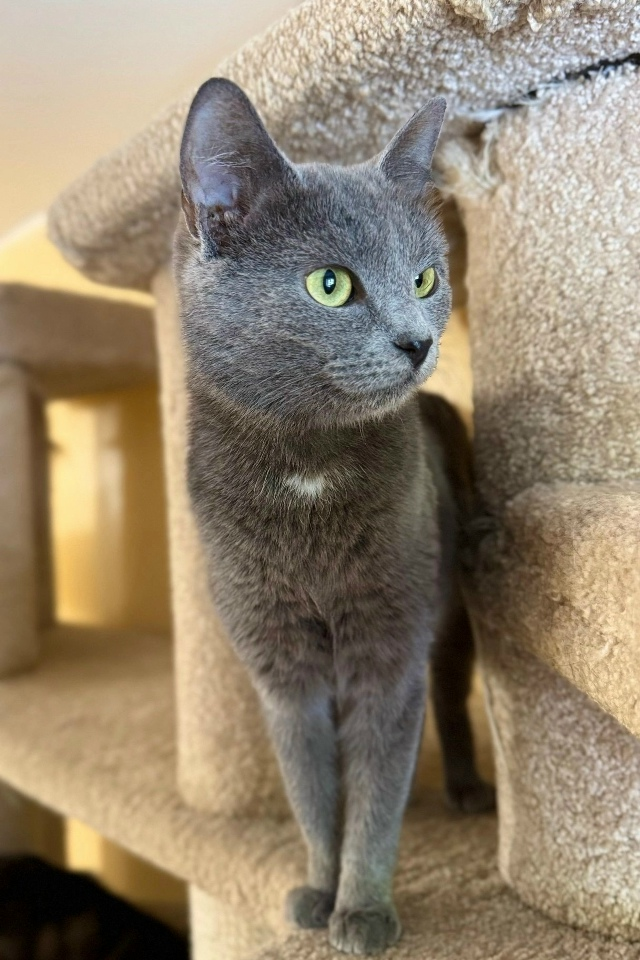
Смотришь на нее и любуешься ее чертами. Помимо всего прочего ей достался идеальный характер. Артемида ласковая, но немного застенчивая. Не шкодливая натура. А значит, подойдет практически каждому. Главное, чтобы вы любили ее, проявляли внимание и заботу. Ведь об этом мечтают все. И Артемида не исключение.
Узнать об Артемиде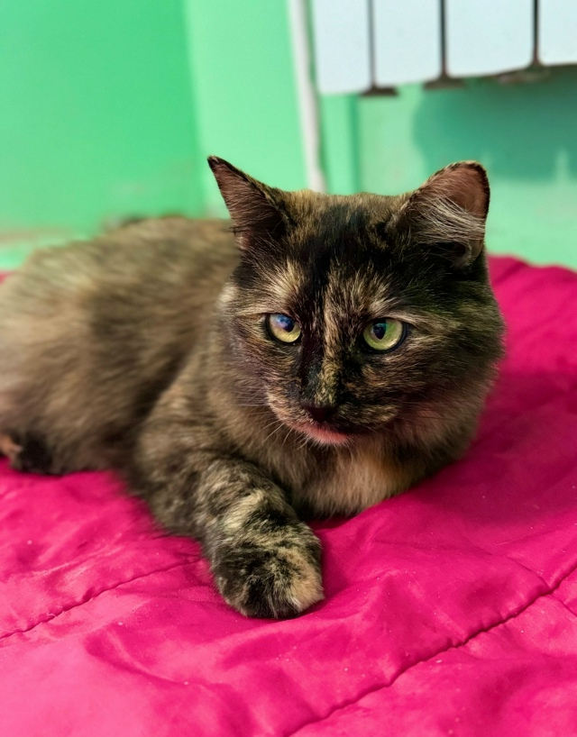
Скромная, тихая, с небольшими особенностями по здоровью. Кита пережила травму хвоста и в итоге хвостика лишилась, но её отсутствие она не замечает. И во всём остальном она обычная кошка. Очень красивая, будто осень одарила её своими красками, нанесла на шубку Киты яркие мазки. Пёстрая окраска Киты — это её визитная карточка.
Узнать о Ките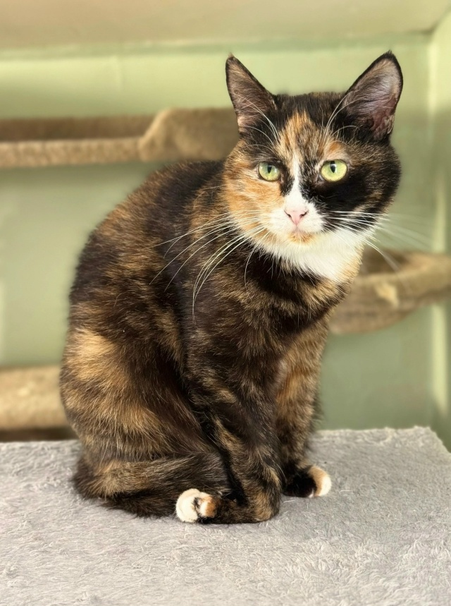
Трёхцветная шубка цвета тёмной летней ночи, осенней листвы и первого снега и ах! — зелёные глаза. А потом вдруг... как же мы любим это вдруг! Недотрога стала увереннее, оттаяла и разрешила себя гладить. Урчит теперь от избытка чувств, ищет почесушек и внимания! Теперь шанс стать домашней красоткой у Адалин появился вполне реальный. И хороша, и скромна, и аккуратна, и душой оттаяла.
Узнать об Адалин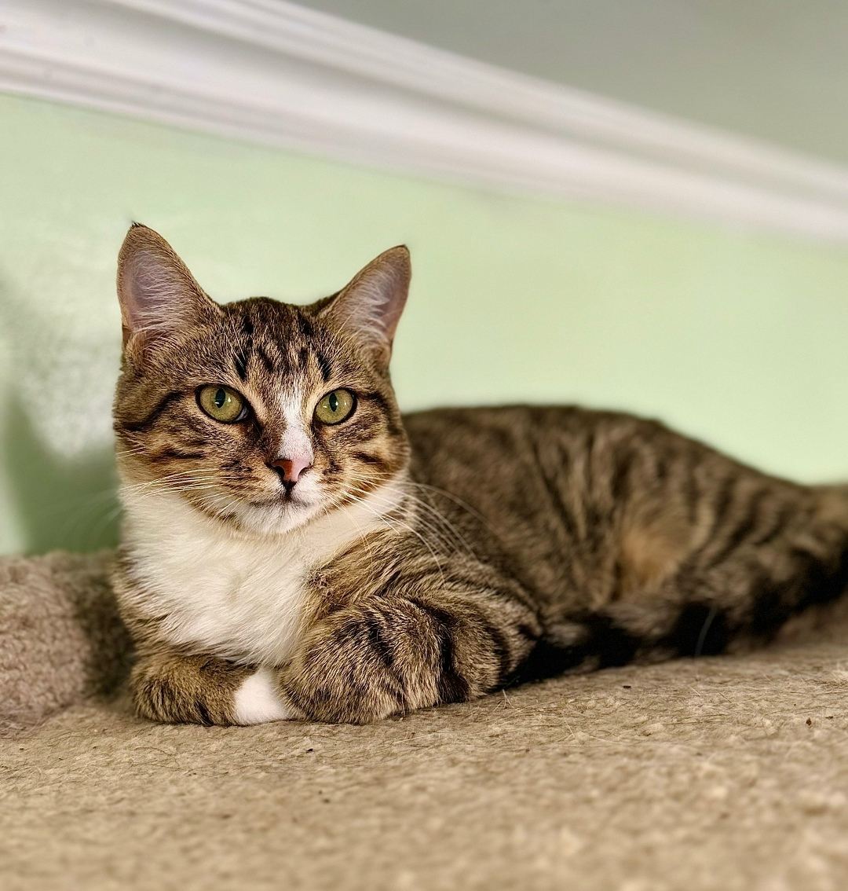
Эрли молодая, не агрессивная, скорее пугливая, но в добром доме с тёплыми руками все страхи отойдут на второй план, и вы получите безумно ласковое создание, готовое петь вам свои песенки, мурчать на ушко, спать у вас под бочком. Эрли красива, её видишь сразу в общем коллективе — большие яркие глазки, очаровательная белая полосочка на мордочке, она очень трогательный ребёнок. Природа одарила её всем.
Узнать об Эрли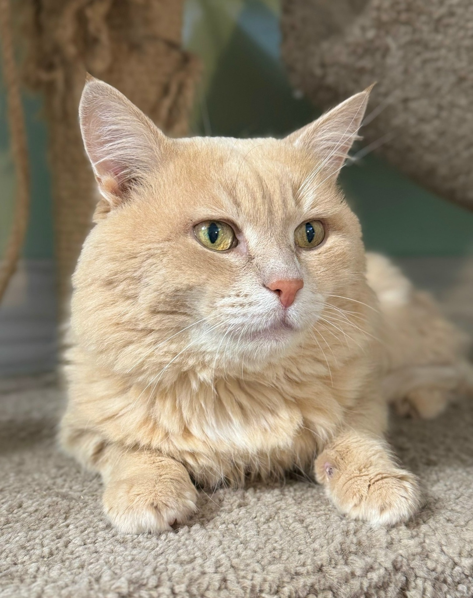
Философ — это мальчик в самом расцвете сил. От признаков былого проживания на улице сейчас не осталось и следа. Какой же он стал красивенный! Бочка наел, щёчки тоже, шубку распушил. Какая она у него невероятная — нежно-персикового окраса. А какие у него глаза — взгляд его глубокий и проникающий в душу.
Узнать о Философе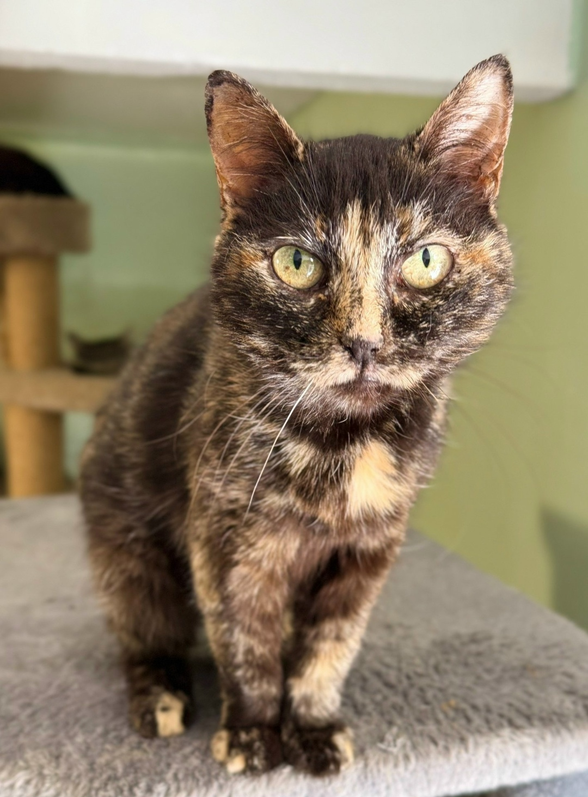
Плюшевая черепашка завоевала в приюте сердце каждого — и людей, и животных. Взгрустнулось волонтёру — значит, нужно идти в кошачьи апартаменты, искать Арабеллу, брать на ручки, и всё — тоску снимает как рукой. А искать Арабеллу даже не надо, она сама найдёт, подойдёт, прижмётся, на ручки попросится.
Узнать об Арабелле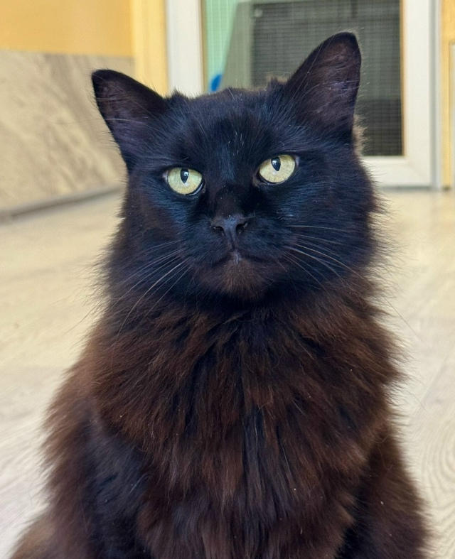
Ласковая и контактная, абсолютно неконфликтная кошь, бесконечно благодарная за спасение, лечение и крышу над головой. Миролюбиво настроена ко всей разношёрстной и разноголосой компании. Всегда в первых рядах выходит встречать девочек-волонтёров, не упускает возможности умоститься на ручках и помурчать для души.
Узнать о Варде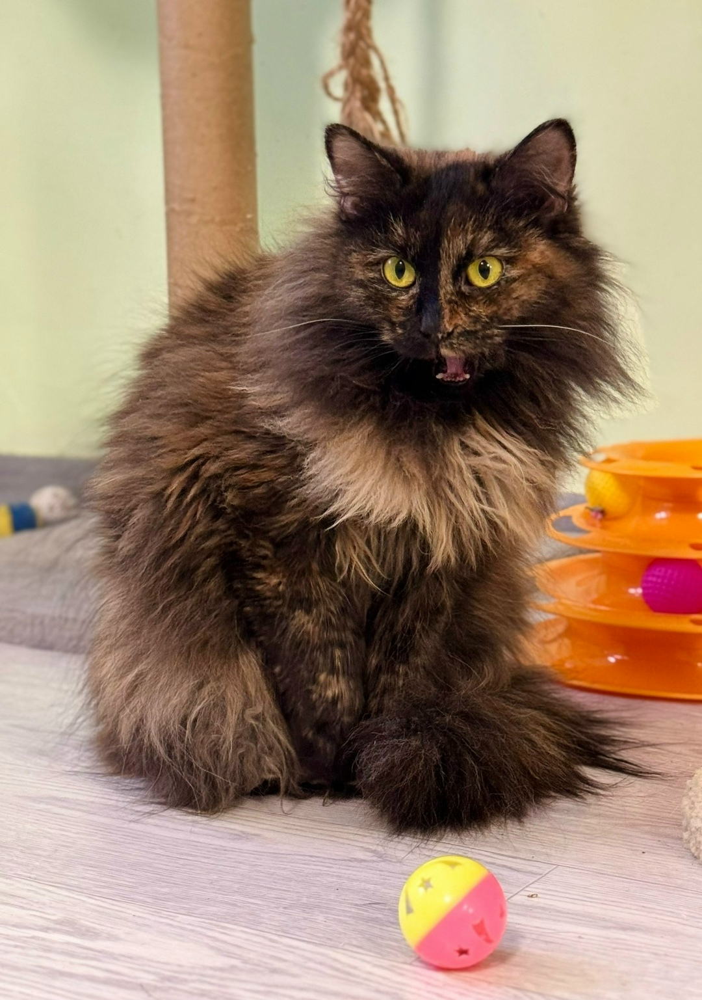
Гвиневра также нереально красива, как и её братик Ланселот. Каждый раз, заходя в колхоз, мы любуемся этой девчушкой. Как тонко природа подобрала краски для её нарядной пушистой шубки — как будто художник делал мазки на картине, подбирая цвета. Родители наградили Гвиневру благородным обликом, смотреть на неё — одно удовольствие.
Узнать о Гвиневре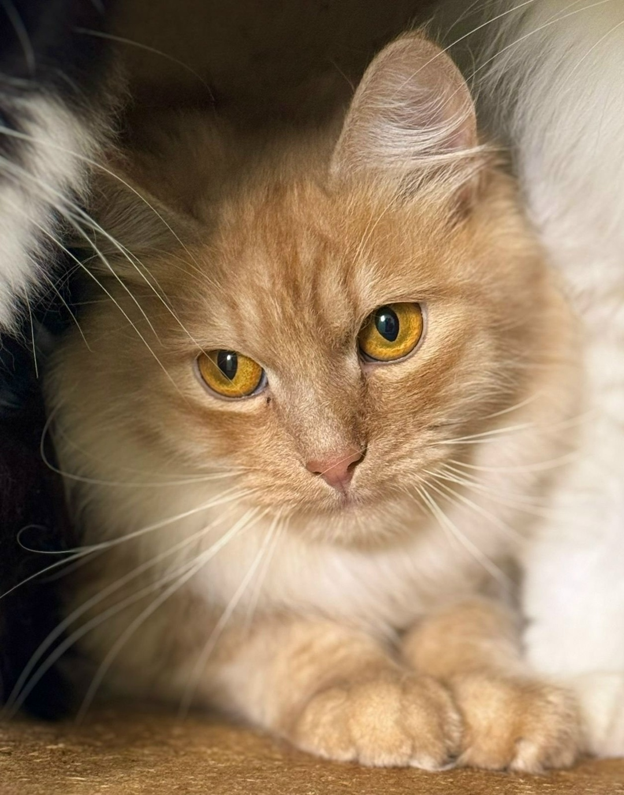
Этот парень невероятно красив, он буквально притягивает к себе взгляды абсолютно всех, кто заходит в кошачий колхоз. Что и говорить: природа одарила его невероятной внешностью. Чего только стоит кремовый окрас его пушистой и роскошной шубки! Ланселот не просто хорош, он прекрасен! Восхищаться его обликом, честно вам скажем, можно бесконечно.
Узнать о Ланселоте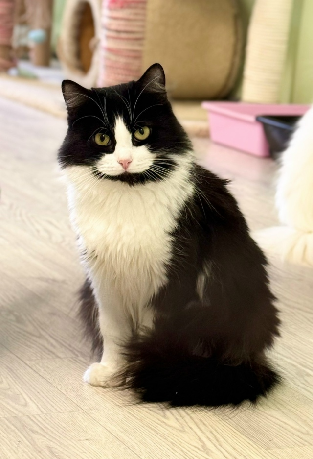
Как мастерски точно передан характер через призму её взгляда: она очаровывает, словно опаивая приворотным зельем своих изумрудных глаз. Совершенно космические, упоительные в своём безграничном эгоцентризме и презрительно-недоверчивом отношении к двуногим. Убивает красотой, харизмой и демонически-неприступным взглядом наша недотрога — кошка Селеста.
Узнать о Селесте